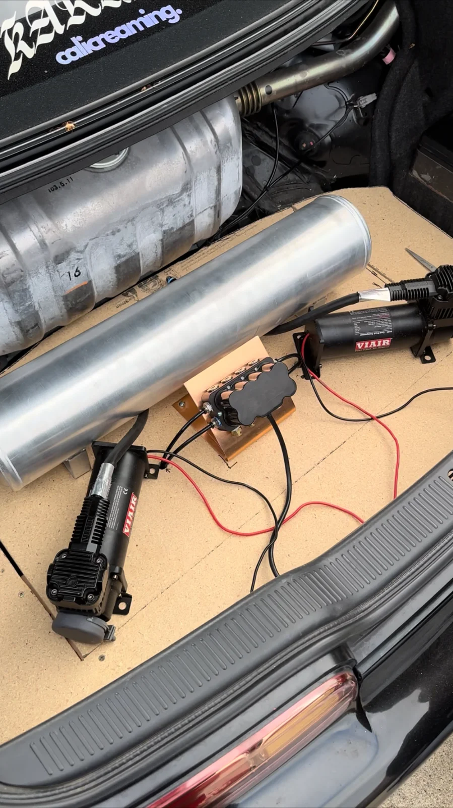
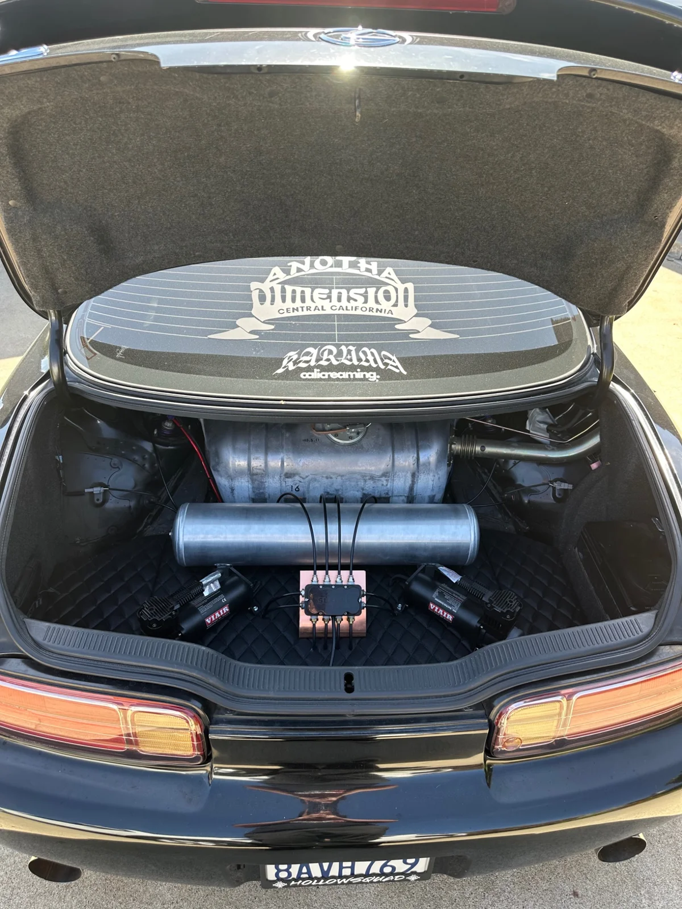
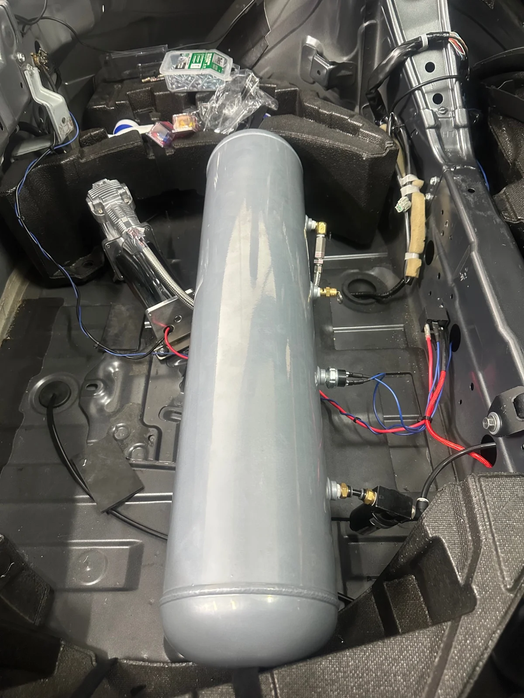
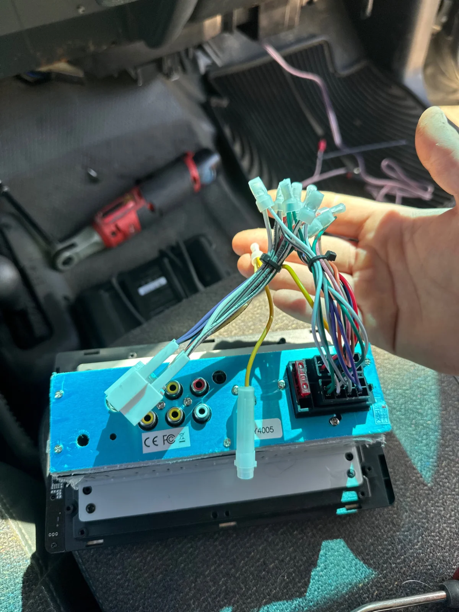
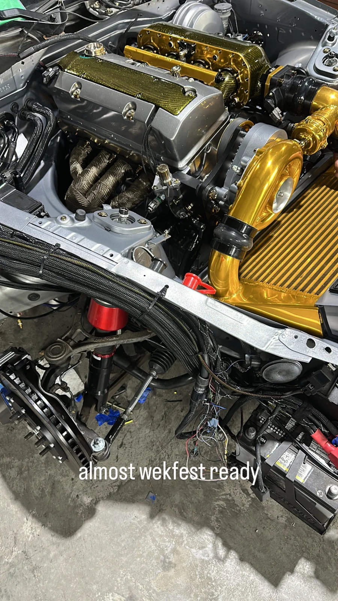
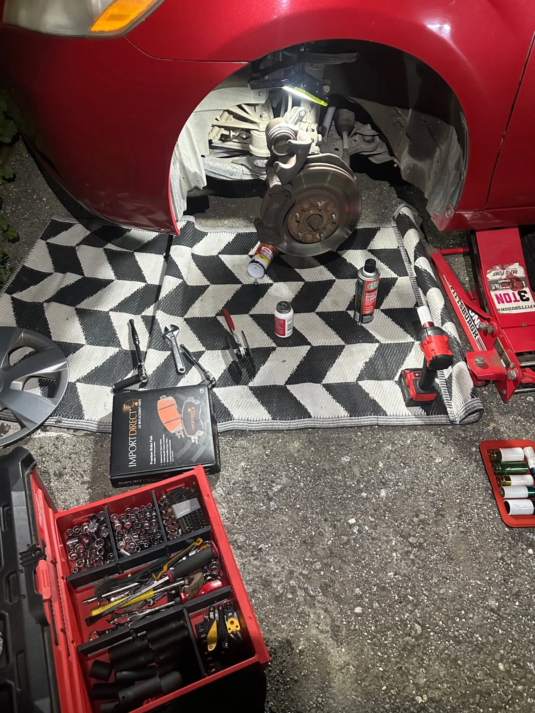
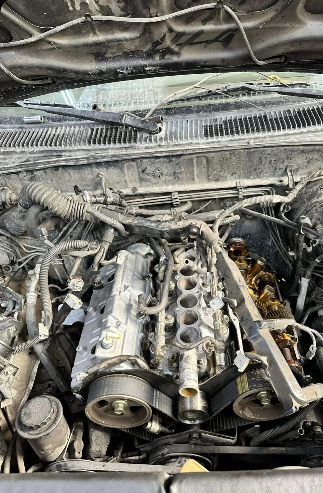
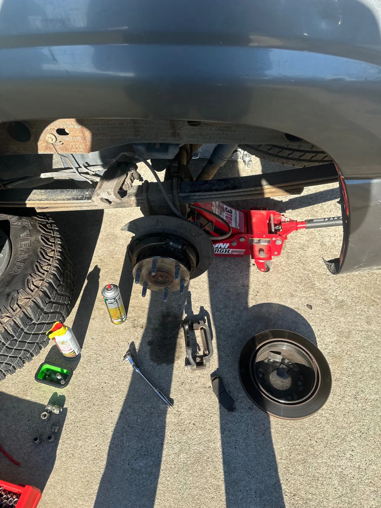

THE PROJECT GALLERY
THE WORK.
UP CLOSE.
Photos from completed projects, including air suspension, audio, brakes, drivetrain, and engine work. Some photos show the work during installation. Select a photo for a closer look.
01 / CUSTOM SUSPENSION
AIR SUSPENSION BUILDS.
The first three photos show one project at different stages. The fourth is a separate concealed installation.
 View photo ↗
View photo ↗Completed trunk installation
The completed setup: air tank, manifold, and twin compressors on a quilted trunk floor.


View photo ↗Earlier installation stage
The same project while components and lines were being arranged.


View photo ↗Another view of the same build
An alternate stage and view of the same trunk project.


View photo ↗Concealed air suspension layout
A separate setup designed to sit beneath the interior panels. Shown with the trim removed.
02 / AUDIO & ELECTRONICS
SOUND & THE WIRING BEHIND IT.
A subwoofer installation and a look at the radio wiring during the work.
 View photo ↗
View photo ↗Subwoofer enclosure
An audio installation positioned behind the seat.


View photo ↗Radio wiring & installation
Radio installation, photographed during the wiring connections.
03 / MECHANICAL WORK
SUSPENSION, DRIVETRAIN & ENGINE WORK.
A selection of completed mechanical jobs. These photos show the suspension, brake, drivetrain, and engine work involved, captured during the jobs.
 View photo ↗
View photo ↗Suspension installation
Suspension installation, photographed with the wheel removed to show the assembly.


View photo ↗Engine work
Engine-bay work, photographed during the job to show component access and installation.


View photo ↗Brake service
Brake work, photographed with the wheel removed to show the brake assembly.


View photo ↗Engine service
Engine service, photographed with components removed for access.


View photo ↗Drivetrain & axle work
Drivetrain and axle work, photographed from underneath the vehicle.
LET’S TALK ABOUT YOUR VEHICLE
Tell me what you have in mind.
Share your vehicle, location, and the work you need. I’ll review the details and confirm the next steps.